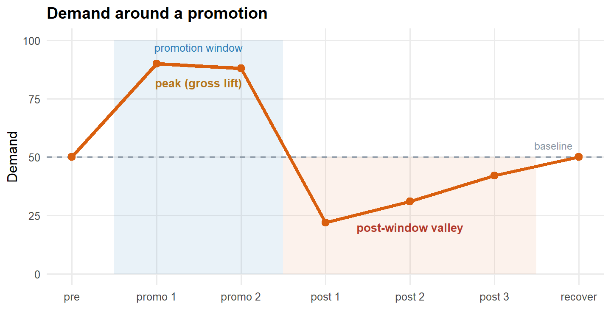
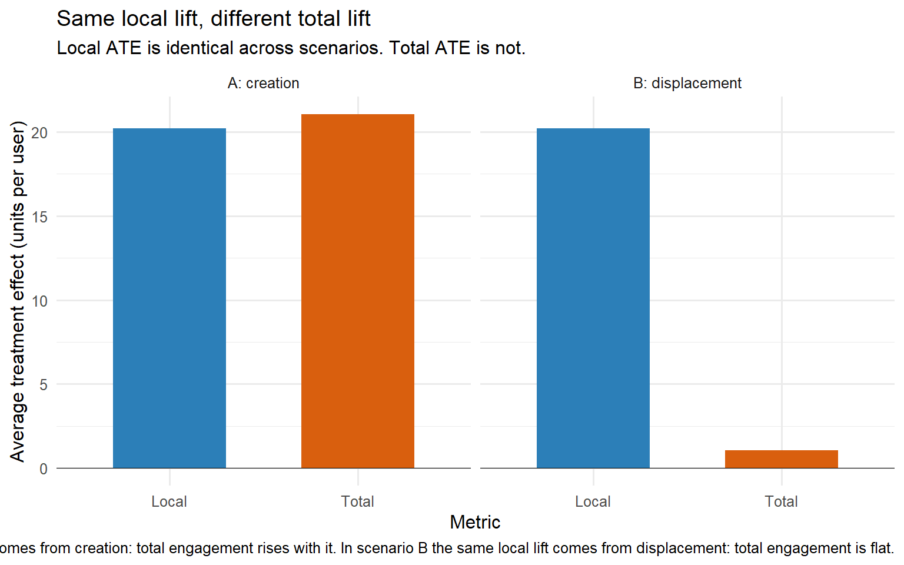

flowchart LR
G["Gross lift<br/>what the dashboard reports"]
G --> CR["Creation<br/>new value that did not exist before"]
G --> SU["Substitution<br/>value moved from another surface, channel or SKU"]
G --> TD["Temporal displacement<br/>value pulled forward or backward in time"]
classDef gross fill:#eef2f6,stroke:#5b6b7b,color:#2c3e50;
classDef create fill:#e6f2ea,stroke:#1e7d4f,color:#1e7d4f;
classDef sub fill:#fdf2e0,stroke:#b5751a,color:#b5751a;
classDef temp fill:#fbe6e3,stroke:#b23a2b,color:#b23a2b;
class G gross;
class CR create;
class SU sub;
class TD temp;
When Good Features Kill Each Other: Cannibalization and the Illusion of Growth
experimentation
causal inference
marketing analytics
product analytics
R
A practitioner’s walkthrough of cannibalization as a general measurement bias: why gross lift on a local metric is not the ATE on the total metric, why smart teams keep missing this in practice, how to measure the gap using MMM cross-elasticities, portfolio decomposition, incrementality experiments and cohort-total tracking, and a review checklist for growth results.
Most product and marketing teams measure success by watching a number go up. A recommendation widget ships and engagement rises 8 percent. A paid search campaign launches and attributed conversions jump 20 percent. A new homepage placement is tested and clicks flow to it. Every one of these results can be entirely real and entirely worthless. The measured gain reflects users who did something they were already going to do, in a different place, at a different time, or through a different channel. Stated in one line: most growth metrics measure movement, not creation.
Why does this persist? Because organisations measure the winner and forget to measure the loser. The dashboards report the metric that went up. They rarely report which metric went down as a consequence. Li et al. (2026) documented this concretely inside TikTok’s paid acquisition system: production attribution was routinely crediting paid channels for daily new users who would have arrived through organic, brand, or other unpaid paths. After deploying an experiment-calibrated attribution correction framework across multiple global markets, the team measured an approximately 15-percentage-point reduction in the cannibalization rate. The mechanism they describe is not a TikTok-specific bug but a structural feature of how almost every growth measurement system works: the easiest growth to celebrate is activity that merely moved, and the hardest to measure is activity that did not exist before.
A note on evidence before we start. The published numbers in this post come from a small set of sources, chiefly one production deployment at TikTok and a body of consumer-goods scanner-data work, so treat them as illustrations of how large the gap can get, not as proof that it is large everywhere. The claim that cannibalization is common rests on the mechanism, which is general, rather than on a representative sample of measured rates, which nobody has. This post treats cannibalization as a general phenomenon that surfaces in product analytics, marketing attribution, marketing mix modelling, pricing, and marketplace dynamics. Part I defines the concept and generalises it across those settings. Part II shows how ubiquitous it is with five concrete examples. Part III separates the four main types: product, channel, temporal, and portfolio. Part IV explains why smart teams keep missing it. Part V reframes cannibalization in causal-inference terms and states the net-lift identity formally. Part VI covers measurement methods: cross-elasticities, portfolio methods, experimentation, and incrementality testing. Part VII walks through an R simulation showing how the same measured lift can come from either creation or displacement. Part VIII is the review checklist I run before I sign off on any “the metric went up” result. Full R implementation throughout.
Part I. What cannibalization actually is
I.1 The three sources of any observed “gain”
Any observed increase in a business metric, after an intervention such as a new feature, a new campaign, a new placement, or a new price, has three possible sources. We call them creation, substitution, and temporal displacement.
Creation is new value that did not exist before. The intervention caused users to do something they otherwise would not have done at all. This is what the organisation typically believes it is measuring, and what the business is actually paid for. Substitution is existing value moved from elsewhere in the business. Users did the same thing they were going to do, but through the new feature, the new channel, or the new placement instead of the old one. The measured metric goes up. The overall business does not. Temporal displacement is existing value moved forward or backward in time. Users did today what they were going to do next week, or next quarter. The measured metric goes up in the short run and often falls back in the medium run. Promotions, discounts, and time-limited offers are the canonical producers of this pattern, but the mechanism is general.
Almost every experiment result, attribution report, and marketing mix output you have ever seen mixed these three sources together in unknown proportions. The measurement systems that produced those numbers were designed to detect the gain, not to decompose it. That is why “the metric went up” and “the business grew” are different claims, and why sophisticated organisations invest in the machinery required to separate them. Every subsequent section of this post is an attempt to make that separation practical.
I.2 The net-lift identity
Once we accept that any gross lift is a mixture of creation, substitution, and temporal displacement, we can write down the accounting identity that every experimentation team should have on the wall. It is true by construction, not by theorem: the work is not in the algebra but in measuring each term independently, which is what the rest of the post is about. Informally:
\[ \text{Net Value Created} = \text{Gross Lift} - \text{Substitution} - \text{Temporal Displacement} \]
Rearranged additively, gross lift equals net value created plus substitution plus temporal displacement. The number the dashboard reports is the gross lift, on the left-hand column of the identity. The number the business is actually paid for is the net value created, on the right. The gap between them is cannibalization, in the broadest sense of the term. When substitution and displacement are small, gross and net lift are close and the measurement system works. When they are large, they are not, and the measurement system is producing confidently misleading numbers.
flowchart LR
G["Gross lift<br/>= ATE on local metric"]
G --> N["Net value created<br/>= ATE on total metric"]
G --> C["Cannibalization C<br/>= substitution + temporal displacement"]
classDef gross fill:#eef2f6,stroke:#5b6b7b,color:#2c3e50;
classDef net fill:#e6f2ea,stroke:#1e7d4f,color:#1e7d4f;
classDef cann fill:#fbe6e3,stroke:#b23a2b,color:#b23a2b;
class G gross;
class N net;
class C cann;
This framing is not new. It is a generalisation of the incrementality concept familiar to marketing scientists, extended explicitly to include product substitution and temporal displacement as separate sources of non-incremental gain. Part V restates the identity in formal potential-outcomes notation, with two causal estimands and a precise definition of the gap between them. The rest of this section prepares the ground for that formalisation by clarifying why the classical marketing-science definition is not enough.
I.3 Why the classical marketing definition is too narrow
In the marketing literature of the 1980s and 1990s, cannibalization was defined narrowly as the loss of sales of an existing product due to the introduction of a new product in the same portfolio. Copulsky (1976) framed the concept inside brand management, Kotler (2003) codified the definition in his textbook treatment, and the more recent quantitative work by Srinivasan, Ramakrishnan, and Grasman (2005a, 2005b) sits within the same frame. They developed parametric measures for identifying which existing SKUs are the victims when a new SKU is launched, and in the companion paper they went further, incorporating cannibalization directly into ARIMA-style demand forecasts and reporting predictive-error reductions of 16 to 42 percent against ARIMA alone on real consumer-beverage sales. That framework remains the standard modern statement of the classical view, and it will reappear in Part II.3, Part III.4, and Part VI.2 whenever a portfolio-level question is on the table.
The classical definition is too narrow for modern practice. It treats cannibalization as a within-portfolio product problem, resolved through better new-product forecasting. In modern data-driven organisations, the same mechanism operates at every level of the growth stack. Cannibalization happens between product features, when a new recommendation widget takes clicks from an existing one. It happens between marketing channels, when paid search absorbs conversions that would have come through organic. It happens between placements on a single page, when a new banner draws clicks from an old one. It happens across time, when a promotion pulls demand forward from next month. And it happens in marketplaces in ways that classical portfolio cannibalization does not anticipate, when a subsidy to one side of a market displaces activity on the other. Restricting the concept to product-line effects concedes the most consequential parts of the problem to teams that do not have the vocabulary to see them. In my own work I treat cannibalization as the general problem of separating gross lift from net value created, wherever the gap appears. The classical product-portfolio case is one instance. The rest of this post covers the others.
NoteA brief history: from Kotler to TikTok
Cannibalization was formalised in the classical marketing literature. Copulsky (1976) framed it inside brand management, Kotler (2003) codified the definition in his textbook treatment, and Srinivasan, Ramakrishnan, and Grasman (2005a, 2005b) built the modern quantitative version that identifies victim SKUs and incorporates cannibalization into ARIMA-style demand forecasts. The concept has since been extended in engineering practice at platforms such as TikTok (Li et al. 2026) to cover paid-versus-organic attribution, channel overlap, and incrementality measurement at production scale.
The identity is easy to state and hard to apply, because seeing cannibalization requires measuring things the dashboard was not designed to measure. Part II gives five concrete examples of cannibalization in action, drawn from product analytics, marketing attribution, marketplace dynamics, and pricing. Each example follows the same pattern: a measured gain, an uncounted loss, and a business decision made on the wrong number.
Part II. Cannibalization is everywhere
Part I gave the definition. Part II gives the reason the definition matters. Cannibalization is not a niche issue for product-portfolio managers at consumer goods companies. It is the default state of almost every growth measurement system in a modern data-driven organisation, and product, marketing, pricing, and marketplace teams all live with it. The only variable across settings is whether the team knows.
What follows is five settings, five mechanisms, five ways the same measurement failure keeps showing up under different names.
II.1 A new product feature that “increases engagement”
A product team launches a new module. A new recommendation widget, a new tab, a personalised feed, an extra placement on the home screen. The intervention increases the metric attached to the new module. Clicks on the widget rise. Time spent on the new tab is non-trivial. Adoption of the new feed is meaningful. The team reports the result as a successful launch, and the organisation records it as growth.
The users who clicked the new widget did not conjure new attention out of nowhere. They redirected attention from somewhere else in the product. The old recommendation surface receives fewer clicks. The default tab loses time-spent. The previous personalised feed sees a drop in engagement. When we look at the total time-spent, total revenue, or total retention of the affected user cohort before and after the launch, in most cases the total is unchanged, or only modestly higher than the gain reported on the new surface. The gain on the new surface and the loss elsewhere land in different dashboards, and only one of the two is on the launch review deck. The measurement system was built to detect the gain, not to check the totals.
This is the most common form of cannibalization in modern product analytics, and the least well documented in the academic literature, because platforms rarely publish the counterfactuals. It shows up systematically in the internal experimentation programs of every major recommendation-driven platform. In my own work I treat any product-feature A/B test that reports a lift on a local metric without a matched total-cohort metric as evidence of motion, not evidence of growth.
II.2 A paid marketing channel that “drives new users”
A growth team runs paid acquisition through a performance channel: paid search on branded keywords, paid social on a lookalike audience, an affiliate deal, a paid partnership. The attribution system credits the paid channel for the conversions that occurred within the attribution window after exposure. The metric is called “attributed conversions”, or “attributed daily new users”, or “attributed revenue”. The team reports the result as channel performance, and budget is allocated on the strength of it.
A significant fraction of the attributed conversions would have happened anyway, through organic search, direct navigation, brand-driven traffic, or another paid channel. The attribution system was designed to assign credit to observed touchpoints, not to distinguish incremental conversions from non-incremental ones. The gap between attributed and incremental is exactly the cannibalization term in the informal identity from Part I.
Li et al. (2026), reporting on TikTok’s production growth systems, calibrated their attribution outputs against incrementality experiments across multiple global markets. Their framework uses the experiment readouts as causal anchors and converts sparse channel-level lift measurements into daily attribution corrections at production granularity, then allocates the calibrated cannibalization volume across business hierarchies under structural consistency constraints. After deployment, they measured an approximately 15-percentage-point reduction in the measured cannibalization rate, and offline forward-in-time validation showed that the corrected estimates reduced calibration error substantially relative to raw attribution and to fine-grained ML baselines. The framework did not change what the paid channels were doing. It changed how much of what they appeared to do was actually incremental. The reallocations that followed were structural.
This is the single largest published example of the phenomenon inside a modern paid-media stack, and its mechanism is a paradigm case for the rest of the post. The 15-point number itself will reappear in Part IV.2 as the operational payoff of correcting an attribution-driven failure mode. It will not appear again after that, because it is a single production result, not a universal constant.
II.3 A promotion that “grows sales”
A merchandising team runs a discount, a bundle offer, a limited-time promotion, or a targeted coupon. Sales in the promotion window rise substantially compared to the pre-promotion baseline. The team reports the gross lift, and the promotion is classified as successful. In many cases the lift compares favourably to the discount depth, and the promotion is scheduled to run again.
Customers respond to the offer by purchasing what they were going to purchase later, or by stocking up on quantities they would have bought over the following weeks. Sales in the post-promotion window fall below the counterfactual, sometimes for several weeks. When the measurement window ends at the close of the promotion, the reported lift is gross, not net. When the window extends long enough to include the post-promotion valley, the true incremental effect is often a small fraction of the gross lift. Discount-heavy retail categories are the canonical setting, but the pattern applies to any promotional mechanism with a fixed customer stock behaviour, including cashback programs, seasonal price cuts, and loyalty-tier promotions.
The classical marketing-science literature has treated this pattern for decades under the label of “purchase acceleration” and its downstream effect on long-run demand. Srinivasan, Ramakrishnan, and Grasman (2005b) document that incorporating cannibalization effects explicitly into demand forecasting improves fidelity against ARIMA baselines by between 16 and 42 percent, depending on the product category. The improvement was measured by comparing the proposed cannibalization-integrated model to a pure ARIMA benchmark and to actual historical sales data for a real consumer-beverage manufacturer, with the attribute set feeding the cannibalization component tested through a battery of hypotheses on package size, package volume, and price point. That improvement is an indication of how much predictive accuracy the naive forecast left on the table by ignoring displacement, not a direct measure of the cannibalization term itself. It is the classical framework’s most useful reminder that displacement is large enough to move a forecast materially, even in industries where product categories are stable and the data pipeline is mature.
II.4 A price change that “moves volume”
A pricing team introduces a new product variant, a new size, or a new price point. Volume shifts toward the new offering. The team reports the volume gain. Depending on the pricing framework, the result is characterised as a successful launch, a successful assortment expansion, or a successful segmentation.
A significant share of the volume gain on the new offering comes from volume lost on existing offerings in the same portfolio. Cross-price elasticities describe this directly: a price change on one product shifts demand between products in a well-defined way, and the shift can be documented via panel data or scanner records. The empirical decomposition literature puts a scale on how large that share can be. Reviewing the household-level evidence, van Heerde, Leeflang, and Wittink (2000) report that brand switching accounts for the majority of a promotion’s sales effect, on the order of three-quarters, with purchase acceleration and genuine category expansion making up the remainder. The same logic applies inside a single firm’s portfolio. When a new offering wins volume, most of that volume is redirected from something the firm already sold rather than newly created. When the new offering targets a segment already served by an existing offering, the within-portfolio substitution share is high. When it opens a genuinely new segment, the substitution share is lower. The gap between gross volume gain and incremental volume is exactly the portfolio-cannibalization term the classical marketing literature was built to measure.
Srinivasan, Ramakrishnan, and Grasman (2005a) developed parametric measures for identifying which existing products in the portfolio are the “victims” when a new product is introduced. Their case study on a consumer beverage manufacturer decomposed the observed sales gain of new introductions into a genuine incremental component and a substitution component at the product, product group, family, and brand levels, and confirmed that the losses concentrated on the existing items whose package size, package volume, and price point were closest to the new introduction. The framework is the modern quantitative statement of a phenomenon that was described qualitatively by Copulsky (1976) and by Kotler decades earlier.
II.5 A marketplace intervention that “clears the market”
A marketplace team introduces a new intervention: a pricing surcharge, a dispatch rule, a matching algorithm, an incentive program. The intervention increases the metric it was designed to move, whether that is trips per driver-hour, bookings per host-week, or conversions per seller-listing. The team reports the improvement as a marketplace efficiency gain, and the organisation records it as growth.
In a marketplace, the intervention rarely creates new supply or new demand. It redistributes the existing supply and demand across time, across the two sides of the market, or across the marketplace’s own product lines. A dispatch rule that reduces wait times on one product often does so by cross-subsidising from another product. An incentive that increases activity in one geography often does so by shifting supply from an adjacent geography. A matching change that raises conversions in one segment often does so by suppressing them in another. The Two-Sided Markets post in this series covered the mechanism in full. Here it is the same mechanism reappearing as a cannibalization problem across marketplace products rather than across product-portfolio SKUs.
The marketplace-experimentation literature has documented this pattern most concretely in the switchback and cluster-randomization work at Uber, DoorDash, and Lyft, cited in the Switchback post in this series. The canonical failure mode is a user-level A/B test that shows a lift on the treated arm because the arm consumed marketplace supply that would otherwise have gone to the control arm. When the test is redesigned to preserve the equilibrium within each arm, the reported lift often shrinks substantially, and occasionally flips sign. The mechanism is cannibalization in the sense of Part I: gross lift measured locally, with substitution moved into a metric nobody tracked. In my experience running and reviewing this class of test, the shrinkage is not a rare edge case, it is the modal outcome.
Transition
Five settings, one shared mechanism. The next section takes that shared mechanism and organises the different flavours of it into a small typology, so that you can name which type you are looking at when the pattern shows up in your own work. Product cannibalization, channel cannibalization, temporal cannibalization, and portfolio cannibalization are the four types worth naming, and each has its own diagnostic and its own remedy.
Part III. The four types of cannibalization
Part II walked through five settings where measured gains overstate created value. Part III organises those five settings into four types. The types are distinguished by the object across which substitution occurs: products, channels, time periods, or portfolio SKUs. Each type has its own natural failure mode inside the measurement system, and each has its own natural remedy. Naming the type is the first step to diagnosing the case.
The plan is straightforward. Four types, four subsections: product cannibalization, channel cannibalization, temporal cannibalization, and portfolio cannibalization. Each subsection carries a mechanism, a time-scale, a measurement signature, and a diagnostic question. Two honest caveats before we start. First, this is a pragmatic taxonomy, not a clean partition of an underlying space: the four types are one substitution mechanism seen across two axes, the object that loses activity and the time-scale on which it loses it, and product and portfolio cannibalization in particular are the same effect at different granularities. Second, real cases routinely show two or three types at once, so treat the list as a diagnostic checklist rather than a set of mutually exclusive boxes. The reason to name the types is that each one has a different measurement signature and a different remedy, not that each one is a separate phenomenon.
TipThe four types, at a glance
- Product cannibalization: substitution within the product, fast (session to weeks).
- Channel cannibalization: substitution across marketing channels, medium (attribution window).
- Temporal cannibalization: substitution across time, slow (weeks to months).
- Portfolio cannibalization: substitution across SKUs in a portfolio, medium to slow (category purchase cycle).
flowchart LR
P["Product<br/>within the product<br/>session to weeks"] --> Ch["Channel<br/>across channels<br/>attribution window"] --> Po["Portfolio<br/>across SKUs<br/>purchase cycle"] --> Te["Temporal<br/>across time<br/>weeks to months"]
classDef prod fill:#eef5fb,stroke:#2C7FB8,color:#2C7FB8;
classDef chan fill:#eef5fb,stroke:#4f7fa8,color:#4f7fa8;
classDef port fill:#fdf2e0,stroke:#b5751a,color:#b5751a;
classDef temp fill:#fbe6e3,stroke:#D95F0E,color:#D95F0E;
class P prod;
class Ch chan;
class Po port;
class Te temp;
III.1 Product cannibalization
Product cannibalization occurs when a new feature, module, or product surface takes activity away from an existing feature, module, or product surface owned by the same organisation. The user interacts with the new surface instead of the old one. Total engagement with the organisation is unchanged, or only modestly higher than the gain reported on the new surface. Attention, transactions, and activity are redistributed inside the product boundary.
Of the four types, product cannibalization operates on the fastest time-scale. Substitution happens inside a single user session, or across sessions on a day-of-week basis. When a new placement or module is introduced, the redistribution can be measured within days or weeks. Long-run product cannibalization, where users abandon a feature entirely over months, exists as a downstream consequence of the same short-run mechanism rather than a separate type.
Product cannibalization enters the measurement system through metrics attached to specific surfaces. Clicks on the new widget, time on the new tab, adoption of the new feed. The measurement fails when the matched metrics on the surfaces that the new feature displaces are not measured, or are measured but not compared. Product analytics stacks typically report the winning surface on the executive dashboard and hide the losing surface in the drill-down.
The diagnostic question you should ask is: for the cohort of users who adopted the new feature, what happened to their total engagement with the product over the same window? If the total is unchanged, product cannibalization is complete. If the total is up by less than the gross lift on the new feature, product cannibalization is partial. If the total is up by the gross lift, the feature is genuinely creating value.
III.2 Channel cannibalization
Channel cannibalization occurs when a paid marketing channel absorbs conversions that would have arrived through another channel in the absence of the paid spend. The paid channel wins the last click, or the last touch, or the last impression, and the attribution system credits the paid channel for the conversion. The user was going to convert anyway, through organic search, direct navigation, brand-driven traffic, or another paid channel. The conversion is real. The incrementality of the paid channel to that conversion is not.
Channel cannibalization operates on the medium time-scale of the attribution window. Conversions attributed to the paid channel accrue over hours to days. The counterfactual conversions that would have occurred without the spend also accrue over hours to days, on a timeline that overlaps with the observation window. That overlap is what makes channel cannibalization visible only to methods that break the overlap directly, through holdout experiments or incrementality tests.
Channel cannibalization enters the measurement system through the attribution layer. Platform-reported ROAS, marketing mix outputs uncalibrated against experiments, and last-touch attribution systems all carry the same failure mode. The paid channel looks efficient because the attribution engine credits it for the conversion. The organisation does not know how much of that credit reflects incremental demand and how much reflects cannibalization of demand that would have arrived by other means.
The diagnostic question you should ask is: if the paid channel were switched off in a defined market or for a defined period, how many of the attributed conversions would still have occurred? The answer is a lift study. The gap between attributed conversions and lift-measured incremental conversions is the channel-cannibalization term. Li et al. (2026) applied this diagnostic at scale at TikTok, and Part II.2 already stated the deployment result.
III.3 Temporal cannibalization
Temporal cannibalization occurs when an intervention shifts activity forward or backward in time rather than creating new activity. The user does today what they were going to do next week, or stocks up on quantities they would have purchased over the following weeks. The intervention wins credit for the transactions inside its window. The transactions that fail to occur outside the window are visible only if the observation window is long enough to include them.
Temporal cannibalization operates on the slowest time-scale of the four, and is the most frequently ignored. The pull-forward can span days for grocery categories, weeks for consumer packaged goods, and months for durable goods. The post-intervention valley in demand is often smaller in amplitude than the peak, but it persists long enough that a measurement window matched to the intervention will systematically miss it.

Temporal cannibalization enters the measurement system through the pre-post comparison window. When the window closes at the end of the promotion or the end of the campaign, the reported lift is gross, not net. The post-window demand valley is not counted. The mechanism was documented decades ago in the marketing-science literature under the heading of purchase acceleration, and every serious modern practitioner in trade promotion or retail pricing has to account for it explicitly.
The diagnostic question you should ask is: what does demand look like in the weeks after the intervention ends? The scanner-data literature measures the post-promotion dip over the weeks immediately following the deal, and a window of roughly four to eight weeks is enough to capture it in most consumer categories. If demand returns to the pre-intervention baseline immediately, temporal cannibalization is small. If demand falls below the pre-intervention baseline for several weeks, temporal cannibalization is meaningful, and the net lift is materially smaller than the gross lift. Van Heerde, Leeflang, and Wittink (2000) estimate the post-promotion dip at between 4 and 25 percent of the current sales effect using store-level scanner data, consistent with the household-level literature that puts the purchase-acceleration component between 6 and 51 percent of the promotional response. Srinivasan, Ramakrishnan, and Grasman (2005b) document the same phenomenon from the forecasting side, reporting a 16-to-42 percent fidelity gain over ARIMA once cannibalization is modelled explicitly.
III.4 Portfolio cannibalization
Portfolio cannibalization occurs when a new product, variant, size, or price point captures sales that would have been made on existing products, variants, sizes, or price points in the same portfolio. The new offering does not necessarily fail to grow the category. The offering grows at the expense of other offerings owned by the same organisation. Cross-price elasticities and cross-product substitution rates are the standard quantitative descriptions.
Portfolio cannibalization operates on the medium-to-slow time-scale. Substitution accrues over weeks and months as consumers reallocate their shopping patterns to include the new offering. Unlike product cannibalization, which is about attention inside a session, portfolio cannibalization is about spend across a category budget. The time-scale is set by the frequency of the purchase category rather than by the session structure of a digital product.
Portfolio cannibalization enters the measurement system through category-level sales reporting. The new offering’s sales are visible. The offset on adjacent SKUs is visible in scanner or panel data, but requires an explicit portfolio-decomposition method to separate. Srinivasan, Ramakrishnan, and Grasman (2005a, 2005b) provide the modern quantitative statement of the framework, with hypothesis-tested attribute drivers and ARIMA-integrated forecasts calibrated against real consumer-beverage sales.
The diagnostic question you should ask is: what happened to sales of the other offerings in the same portfolio during the introduction window, relative to a matched control period or a matched control category? The gap between the new offering’s sales gain and the portfolio total’s sales gain is the cannibalization term. Portfolio methods, cross-elasticity estimation, and matched-control comparison all recover the same quantity from different directions.
Four types, one shared mechanism. In every one of them, the measurement system was built to detect the gain, not to check whether the gain was real. Part IV explains why this pattern is so persistent, and why smart teams keep missing it even after they have been shown the definition and the typology.
Part IV. Why smart teams keep missing it
So far the material has been the easy part. The definition fits in a sentence, the five settings fit on a slide, and the four types fit in a two-by-two. None of it is technically difficult, and none of it is unfamiliar to a competent growth team. Yet cannibalization survives inside the measurement systems of sophisticated organisations for years at a time, quietly inflating shipped-feature lifts, channel ROAS, and promotion effectiveness alike. The question this section answers is why.
Four structural failure modes explain the persistence. Measuring the winner without measuring the loser. Attribution systems that reward overlap. Dashboards that optimise for local metrics. Analytical habits that treat “the metric went up” as a business result. One honest caveat before I name them. These four failure modes reinforce each other, and removing one does not fix the pattern. The organisational commitment required is to remove all four together.
IV.1 Measuring the winner but not the loser
The dominant failure mode is structural asymmetry in what gets measured. When an intervention is launched, the team owning the intervention is responsible for reporting the metric attached to the intervention. There is no team responsible for reporting the counterfactual metric on the surfaces, channels, or periods the intervention displaced. The winner has an owner. The loser does not. Attribution flows toward whoever built the thing that moved, and no analytical process pulls it back.
In a typical growth review, the product team reports engagement on the new feature. The marketing team reports attributed conversions on the paid channel. The pricing team reports volume on the new SKU. Nobody in the room reports the drop on the old feature, the drop in organic conversions, or the drop in adjacent SKU sales. The dashboards are structured around the metric that moved, not around the totals that would reveal whether the movement was creation or displacement. Positive lifts get amplified across reporting layers. Negative offsets get lost in the noise floor of unmonitored metrics.
Correcting this requires a specific commitment. Every intervention that targets a metric on one surface must include, in its analysis plan, the matched metrics on the surfaces that would plausibly be displaced. The cohort of users exposed to the new feature must have their total engagement with the product measured, not their engagement with the new feature alone. The commitment is organisational, not analytical. It requires the growth review to demand the total, and to accept the analytical cost of producing it.
IV.2 Attribution systems that reward overlap
Attribution systems credit paid channels for conversions that occur within an attribution window after exposure. The credit is assigned by rule, not by causal identification. If a paid channel appears in the touchpoint sequence, it wins some share of the credit. That share does not distinguish between conversions that would have happened without the paid channel and conversions that were caused by it. The system is designed to allocate credit. It was never designed to measure incrementality.
The attribution layer is consumed downstream by budget owners who use it to allocate spend. The paid channel looks efficient because it wins credit. The channel that lost credit, typically organic search, direct traffic, or brand-driven demand, has no operational owner to defend it. When budget is reallocated toward paid on the strength of attributed ROAS, the spend does not create the incremental demand the number appears to promise. It substitutes for demand that would have arrived by other means. The attribution system has manufactured the appearance of a growth lever where none existed.
Correcting this requires calibrating the attribution layer against incrementality experiments. Li et al. (2026), reporting on TikTok’s production system, converted sparse channel-level lift measurements into daily attribution corrections and allocated the calibrated cannibalization volume across business hierarchies. After deployment across multiple global markets, the measured cannibalization rate fell by approximately 15 percentage points, and the correction supported budget and traffic strategy adjustments at production scope. The commitment is to treat attribution as a signal to be calibrated, not as ground truth. That is a departure from how most organisations consume attribution outputs today, and it is the concrete organisational counterpart to the framework this post keeps returning to.
IV.3 Dashboards that optimise for local metrics
Dashboards are built to serve the teams that use them. Product dashboards report feature metrics. Marketing dashboards report channel metrics. Pricing dashboards report SKU metrics. Each dashboard is correct within its scope. None of them reports the cross-scope totals that would reveal cannibalization. When a team optimises its dashboard metric, it optimises what the dashboard was built to measure, which is the local metric, not the total. Optimisation of the local metric is compatible with erosion of the total, and the dashboard cannot see the erosion.
This failure mode does not stem from poor engineering. It reflects how data teams scope their work. A dashboard that spans product, marketing, and pricing simultaneously requires coordination across owners who typically do not share metric definitions, do not share instrumentation choices, and do not share review cadences. The path of least resistance is to ship narrow dashboards to individual teams and let the cross-cutting totals live in ad hoc analyses that nobody owns. The narrow dashboards are consumed daily. The cross-cutting totals are consulted quarterly, if at all.
Correcting this requires a governance decision. The organisation must name a small number of cross-cutting totals as first-class metrics, produced with the same frequency and reliability as the local dashboards. Total engagement of the exposed cohort. Total incremental conversions calibrated against lift. Total category volume across the portfolio. These metrics have to be produced whether or not a specific team owns them, and they must appear in the same review meetings where the local metrics are reported.
IV.4 Treating “the metric went up” as a business result
The final failure mode is analytical. Teams and stakeholders treat a positive lift on a local metric as a business result. The reasoning goes: the metric moved, the movement was measured with statistical rigor, and the intervention is therefore successful. The reasoning skips the step of asking whether the movement corresponds to net value created. When the step is skipped consistently, the organisation accumulates a portfolio of shipped interventions whose local lifts are documented and whose total business impact is not.
This failure mode is the hardest to correct because it is embedded in the vocabulary of growth teams. “The metric went up” is treated as synonymous with “we grew”. The vocabulary is convenient because it converts an analytical result into a business narrative in one sentence, and the conversion is what makes it dangerous. The analytical result is that a specific metric on a specific surface increased. The business narrative is that the organisation is better off. The gap between the two is the entire subject of this post, and it is a gap that vocabulary alone can hide indefinitely.
Correcting this requires vocabulary discipline. In my work I refuse to sign off on any intervention as “successful” without a matched statement about net value. The vocabulary I use is that the intervention “produced a local lift of X percent on metric Y, with a matched cohort total of Z percent”. This is more cumbersome than “the metric went up”. It is also less misleading. The cost of the extra words is a fraction of the cost of the misleading narrative, and after a few review cycles the extra words stop feeling cumbersome.
Four failure modes explain the persistence of cannibalization inside sophisticated measurement systems, but naming them is not enough. Correcting them requires the analytical machinery that lets a team decompose a gross lift into its creation, substitution, and displacement components, and that machinery has a formal statement. Part V reframes cannibalization in the causal-inference language this blog has been developing in the Two-Sided Markets and Switchback posts, introduces the net-lift identity in its formal form, and connects it to the incrementality-measurement literature that has grown up around it.
Part V. The causal-inference view
We have covered the what, the where, the types, and the why. Now the how. Cannibalization has a clean formal statement in the potential-outcomes framework the blog has been using since the Counterfactual post, and writing it down does two useful things at once. It makes the identification requirements precise, and it exposes the specific point at which standard A/B tests silently produce the wrong answer.
The plan of Part V is short. V.1 sets up the notation for two outcome metrics measured on the same unit. V.2 states the net-lift identity as a single equation in potential-outcomes notation. V.3 defines cannibalization as the gap between two causal estimands and explains why standard experimentation infrastructure targets only one of them. V.4 names the identification conditions under which the gap is itself a causal effect, and specifies the data that satisfies those conditions.
V.1 Potential outcomes for two metrics
Consider a population of \(n\) units indexed by \(i\), and a binary intervention \(W\). Write \(W_i = 1\) if unit \(i\) is exposed to the intervention and \(W_i = 0\) otherwise. The unit is whatever the design of the study allows us to randomise cleanly: a user, a session, a geo cell, a marketplace region. The intervention is whatever the team has decided to test: a new widget on the home surface, a new SKU inside a portfolio, a bid change in a paid channel, a promotional window in a category.
Two outcome metrics matter for every intervention of this kind, and they are not the same object. The local metric \(Y^L_i\) is measured on the surface, channel, or product where the intervention takes place. Clicks on the new widget. Conversions attributed to the paid channel. Volume on the new SKU. The total metric \(Y^T_i\) is measured across the full cohort of surfaces, channels, or products that the intervention could plausibly affect. Total engagement on the product. Total conversions across all channels. Total category volume across the portfolio. The local metric is what the surface owner instrumented. The total metric is what the profit-and-loss statement records.
For the identity in V.2 to be dimensionally coherent, \(Y^L_i\) and \(Y^T_i\) must be expressed in the same unit, and \(Y^L_i\) must be the component of \(Y^T_i\) that accrues on the intervention’s own surface. Engagement time, sessions, conversions, revenue: whichever unit the business cares about, both metrics carry it. When the raw local metric is reported in a surface-specific unit, such as clicks on a widget, we convert it to the shared unit, such as engagement minutes, before comparing the two. That conversion is itself a modelling assumption, and if the mapping from clicks to minutes is non-linear or varies across users, the conversion carries its own error that has to be reasoned about rather than ignored. The distinction that matters is scope, not unit. The local metric counts the shared quantity only where the intervention lives; the total metric counts it everywhere the intervention can reach.
flowchart TB
subgraph T["Total metric scope (Y-T)"]
direction TB
L["Local metric (Y-L)<br/>the new surface the team instrumented"]
D["Displaced surfaces<br/>old feature, organic channel, adjacent SKU, future periods"]
end
classDef local fill:#eef5fb,stroke:#2C7FB8,color:#1f5f8b;
classDef disp fill:#fdf2e8,stroke:#c98a5a,color:#8a5a24;
class L local;
class D disp;
style T fill:#fff7f0,stroke:#D95F0E,color:#b5461a;
Each unit has four potential outcomes, of which we observe two. This is the potential-outcomes framework of Rubin (1974), named and sharpened into the fundamental problem of causal inference by Holland (1986) and given its modern textbook treatment by Imbens and Rubin (2015), extended here to two outcome metrics per unit. \(Y^L_i(1)\) is the local metric for unit \(i\) under exposure. \(Y^L_i(0)\) is the local metric without exposure. \(Y^T_i(1)\) and \(Y^T_i(0)\) are the corresponding total-metric potential outcomes. Under assignment \(W_i\), the analyst observes \(Y^L_i(W_i)\) and \(Y^T_i(W_i)\) and never sees the counterfactual pair. The local metric and the total metric are different objects defined on different measurement scopes, and the treatment effect on one is not the treatment effect on the other.
V.2 The net-lift identity, formally stated
We now define the two estimands the identity connects. The average treatment effect on the local metric is the standard A/B-test target: the number the experimentation platform reports and the number the dashboards render. Formally,
\[ \mathrm{ATE}^L \;=\; E\!\left[Y^L_i(1) - Y^L_i(0)\right]. \]
The average treatment effect on the total metric is the number the business is paid for, because it is defined on the scope over which value actually accrues. Formally,
\[ \mathrm{ATE}^T \;=\; E\!\left[Y^T_i(1) - Y^T_i(0)\right]. \]
The cannibalization term \(C\) is the gap between the two. The net-lift identity states it in one line:
\[ \underbrace{\mathrm{ATE}^T}_{\text{net value created}} \;=\; \underbrace{\mathrm{ATE}^L}_{\text{gross lift on the local metric}} \;-\; \underbrace{C}_{\text{cannibalization}}. \]
The left-hand side is the net value the intervention created, measured across all surfaces the intervention could plausibly affect. The first term on the right is the gross lift measured on the local metric, which is what the A/B test reports. The second term is the cannibalization component: the average reduction in the total metric attributable to substitution or temporal displacement caused by the intervention. When \(C\) is zero, \(\mathrm{ATE}^L\) equals \(\mathrm{ATE}^T\) and the standard measurement setup is sufficient. When \(C\) is positive, the standard setup systematically overstates the business impact by exactly \(C\), and the overstatement is invisible to the reporting layer because the reporting layer never sees the total metric.
The identity ties directly to the informal decomposition from Part I. Substitution and temporal displacement, taken together, are \(C\). Creation is what remains after subtracting \(C\) from the gross lift, which is precisely \(\mathrm{ATE}^T\) on the left-hand side. The reader who wants a one-line summary of the whole blog series can take this: creation is the residual left over when substitution and displacement are removed from measured lift. Every subsequent section that mentions “the net-lift identity” points back to this equation. It will not be re-derived elsewhere.
V.3 Two causal estimands, one measurement system
A well-executed A/B test identifies \(\mathrm{ATE}^L\) under the standard assumptions covered in the Counterfactual post: random assignment of \(W\), SUTVA at the level of the local metric, consistency, and positivity. Under those conditions the difference in observed local-metric means between treated and control units is an unbiased estimator of \(\mathrm{ATE}^L\), and the standard confidence intervals report what they claim to report. Nothing in this argument, however, identifies \(\mathrm{ATE}^T\). The two estimands are defined on different outcome variables, and estimating the second requires measuring the second. It cannot be recovered from measurements of the first alone.
This is not a subtle point about advanced experimental design. It is the point at which almost every growth measurement system silently fails. The experimentation platform was scoped to identify \(\mathrm{ATE}^L\), and at that job it succeeds. The business then consumes the reported number as if it were \(\mathrm{ATE}^T\), because the business cares about the total metric and no other number is on offer. The gap between what was estimated and what was consumed is \(C\), and \(C\) is unobserved. Correcting the failure does not require inventing new estimators. It requires measuring the total metric on the exposed cohort, over a window long enough for the substitution and displacement to become visible.
NoteThe estimand comes first
The net-lift identity makes explicit what most measurement systems leave implicit, which is that A/B tests target \(\mathrm{ATE}^L\). Treating \(\mathrm{ATE}^L\) as if it were \(\mathrm{ATE}^T\) is the mechanical source of cannibalization bias. Fix the estimand before fixing the estimator.
V.4 Identification, and what data satisfies it
Under random assignment of \(W\) and SUTVA at the level of the total metric, both \(\mathrm{ATE}^L\) and \(\mathrm{ATE}^T\) are identified from the difference in observed means between treated and control units on their respective metrics, and \(C\) is identified as the difference of those two differences. Consistency and positivity are inherited from the Counterfactual-post setup and require no separate argument here. The assumption that does the work is SUTVA at the total-metric scope, in the sense of Imbens and Rubin (2015). It says that the treatment of one unit does not affect the total-metric outcome of another unit. If units share a supply pool, a recommendation system, an ad auction, a category budget, or an attribution window, SUTVA can fail at the total-metric scope even when it holds cleanly at the local-metric scope. The Switchback post in this series covered this failure mode in the marketplace setting and explained why the standard fix is to move the randomisation to a level at which the interference is contained.
WarningSUTVA can hold locally and fail totally
This is the trap that quietly invalidates the most confident results. A user-level A/B test can satisfy SUTVA perfectly for the local metric and still violate it for the total metric, because treated units draw down a shared supply pool, auction, or budget that control units also depend on. The local estimate is clean. The total estimate is contaminated, and the direction of the bias is not guaranteed. Whenever units share a scarce resource, move the randomisation to a level (geo, time block, cluster) at which the interference is contained before you trust \(\mathrm{ATE}^T\).
The data requirement follows from the identification requirement. Identifying \(C\) requires access to the total metric on the exposed cohort, not merely the local metric on the treated arm. This is what makes cannibalization measurement operationally expensive. The total metric has to be defined before the experiment starts, not reconstructed after the fact from whichever fields happened to be logged. It has to be tracked with the same reliability as the local metric, not with the looser instrumentation that non-owned surfaces usually get. The analysis window has to be long enough for substitution and displacement to appear, which in retail and pricing settings is often weeks rather than days, as the Forecasting post argued. And in marketplace, portfolio, or attribution settings, the randomisation unit has to be chosen so that SUTVA at the total-metric scope is defensible, which in practice usually means geo experiments, time-based holdouts, or switchback designs rather than user-level A/B.
In my work I treat the specification of the total metric, and the organisational commitment to measure it, as the single most consequential design choice in any experiment that could plausibly displace value from an untracked surface. The estimator can be swapped later. The measurement of \(Y^T_i\) on the exposed cohort cannot.
Bridge to Part VI
The identity in V.2 tells us what we are trying to measure. The identification conditions in V.4 tell us what data would satisfy the causal requirement. Neither tells us which estimator to reach for in a live measurement setting, and the honest answer is that different estimators satisfy the requirement to different degrees. Part VI covers the concrete methods used in practice to estimate \(C\), from cross-elasticities inside marketing mix models to incrementality experiments and geo tests, to portfolio-level decomposition methods, and states plainly where each one succeeds and where each one silently fails.
Part VI. How to actually measure cannibalization
Part V established that cannibalization is defined as the gap between \(\mathrm{ATE}^L\) and \(\mathrm{ATE}^T\). Measuring cannibalization operationally means measuring that gap. There are four practical approaches. Each measures the gap under a different set of assumptions, on a different type of data, and with a different failure mode. None of them is universally better than the others. Choosing between them is a design decision that depends on the type of cannibalization present, the data the organisation has access to, and the operational constraints on running an experiment.
Part VI walks through four approaches: cross-elasticities in marketing mix models, portfolio decomposition methods, incrementality experiments, and cohort-total tracking on the exposed population. Each is treated as a tool with a defined scope, a data requirement, and a failure mode stated plainly.
TipWhich approach for which type
- Cross-elasticities in MMM: channel and portfolio cannibalization, at aggregate weekly or daily scale.
- Portfolio decomposition methods: portfolio cannibalization at the SKU level, in structured product catalogues.
- Incrementality experiments: channel, temporal, and product cannibalization when randomisation at the right scope is operationally available.
- Cohort-total tracking: product cannibalization on digital surfaces, and portfolio cannibalization when the exposed cohort can be defined.
| Approach \ Type | Product | Channel | Temporal | Portfolio |
|---|---|---|---|---|
| Cross-elasticities (MMM) | ○ | ✓ | ○ | ✓ |
| Portfolio decomposition | ○ | — | — | ✓ |
| Incrementality experiments | ✓ | ✓ | ✓ | ○ |
| Cohort-total tracking | ✓ | — | ○ | ○ |
VI.1 Cross-elasticities in MMM
Marketing mix models estimate the sales response to marketing spend across channels, controls, and product portfolio, typically at weekly or daily frequency over one to three years. Cross-elasticities are the off-diagonal terms of the response matrix: the elasticity of sales in channel A (or product A) with respect to spend or price in channel B (or product B). When these terms are negative and large in absolute value, the MMM is reporting that channel A cannibalizes channel B. The framework has been standard in consumer goods and retail practice for decades and forms the aggregate-scale counterpart to the causal work covered in the Elasticity post in this series.
Cross-elasticities in MMM are well suited to channel cannibalization and to portfolio cannibalization at the aggregate scale. They can, in principle, capture the long-run substitution patterns that operate across the marketing mix, including the substitution between paid channels and the substitution between product lines that share a demand base. They are less well suited to product cannibalization at the feature level, which operates at a finer time and unit resolution than MMM typically supports. They are also not the natural tool for temporal cannibalization within a promotional window, which requires modelling the carryover and pull-forward dynamics as first-order objects rather than nuisance components.
Running the approach requires the standard MMM data stack. Weekly or daily spend and volume by channel and by product. Control variables for seasonality and macro. Enough historical variation in the marketing mix to identify the response surface. The estimation is Bayesian in modern practice, with informed priors on adstock and saturation, and calibration against lift studies is essential rather than optional. If you are running the approach on your own case, the Elasticity post in this series covered the causal identification issues that distinguish an MMM output from a defensible estimate, and those issues carry over to the cross-elasticity terms one-for-one.
The honest failure mode of MMM cross-elasticities is that they are correlational unless calibrated. Without lift-study calibration, an MMM can report a plausible-looking cross-elasticity between two channels that reflects common demand shocks rather than substitution. The number is not necessarily wrong, but it is not identified either. In my work I do not treat an uncalibrated MMM cross-elasticity as evidence of cannibalization. I treat it as a hypothesis to be tested against an incrementality readout, and I flag the distinction in writing whenever the output goes to a decision maker.
WarningAn uncalibrated cross-elasticity is a hypothesis, not a finding
A negative off-diagonal term in an MMM is consistent with true substitution, but it is equally consistent with two channels responding to the same demand shock. The model cannot tell those apart from observational variation alone. Do not let an uncalibrated cross-elasticity travel into a budget decision as if it were a measured cannibalization rate. Anchor it to an incrementality readout first, and label it as a hypothesis until you have.
VI.2 Portfolio decomposition methods
Portfolio decomposition methods estimate the substitution rate between a new product and the existing products in the same portfolio. The framework has a long tradition in the marketing-science literature, formalised in its modern operational form by Srinivasan, Ramakrishnan, and Grasman (2005a, 2005b). Product attributes and portfolio membership are used to construct a similarity metric, and the substitution rate is estimated as the fraction of the new product’s sales that come from within-portfolio displacement rather than from category expansion or from competitor products. The output is a decomposition of gross lift into the same three components introduced in Part I, applied at the SKU level, and the companion paper of that series extends the decomposition into an ARIMA-based demand-forecasting model whose fidelity, on the consumer-beverage data used in the study, improved on the pure ARIMA baseline by between 16 and 42 percent depending on the SKU.
Portfolio decomposition methods are specifically designed for portfolio cannibalization. They are the natural tool when a new SKU, variant, or price point is launched into an existing portfolio and the question is which existing offerings lose sales to it. They are less useful for channel cannibalization, which operates across marketing channels rather than across SKUs, and for temporal cannibalization, which operates across time periods rather than across offerings. When we apply them to product cannibalization at the feature level on a digital surface, they can be adapted, but the similarity metric has to be redefined for the new context and the adaptation should be treated as a modelling exercise rather than a routine deployment.
Running the approach requires SKU-level sales data before and after the new product introduction, portfolio metadata rich enough to construct the similarity metric, and either a control category or a pre-post window long enough to separate the substitution signal from the underlying category dynamics. The consumer goods sector has the mature version of this capability, typically through panel data or scanner data purchased from third-party providers. Digital marketplaces can adapt the framework using their own portfolio structures, and if you are on that side of the problem you will find that the metadata investment is the binding constraint rather than the sales data itself.
The failure mode is that the similarity metric is a modelling choice. Different choices of similarity produce different substitution rates. When the new product is genuinely close to an existing one, the choice matters less. When the new product is intermediate between two existing segments, the choice matters a lot, and the estimated substitution rate can move by tens of percentage points depending on which attributes are given weight. Srinivasan, Ramakrishnan, and Grasman (2005a) document the sensitivity of the decomposition to attribute selection and the ranking of victim SKUs that results from it. The number the method produces is only as good as the metric behind it.
VI.3 Incrementality experiments
Incrementality experiments randomise exposure to the intervention across units, whether users, cells, geographies, or time blocks, and measure the effect on the total metric of interest rather than only the local metric. The design is the same causal-inference machinery covered in the Switchback and Two-Sided Markets posts, applied to the specific question of whether the intervention creates value or displaces it. Ghost-ad experiments and hold-out attribution studies are the canonical modern examples, and Li et al. (2026) provide the largest-scale recent example: a production framework at TikTok that uses incrementality experiments as causal anchors to correct paid attribution at daily and campaign granularity, then propagates the correction across a business hierarchy under structural consistency constraints so that the correction is actionable at production scope rather than only at the level at which the experiment was run.
Incrementality experiments are the most flexible of the four tools. They can identify channel cannibalization when applied at the geo or user level to a marketing channel. They can identify temporal cannibalization when applied over a long enough window to include the post-intervention period and detect pull-forward. They can identify product cannibalization when applied to a product feature with a matched cohort-total metric on the exposed population. They are less useful for portfolio cannibalization at the SKU level, because randomising exposure to a new SKU is operationally hard, and the natural workaround (a geo hold-out on the launch) blurs the SKU-level attribution that portfolio decomposition methods target directly.
Running the approach requires an experimentation platform with support for the appropriate randomisation unit, a definition of the total metric fixed before the experiment starts, and an analysis window long enough for substitution and displacement to be visible. The randomisation unit must be chosen so that SUTVA at the scope of the total metric is defensible, which in marketplace or paid-media settings typically means geo experiments or platform-level holdouts rather than user-level A/B tests. The Switchback post in this series covered the interference logic in depth, and the same logic determines whether an incrementality experiment measures the cannibalization term you intend to measure.
The failure mode is operational cost. Incrementality experiments require holding back exposure from a control arm, which is politically hard for paid channels that already appear efficient in the attribution layer. The organisation has to accept a measured loss in the control arm in exchange for a calibrated estimate. Li et al. (2026) document that in a large-scale deployment the calibration produced by this trade-off supported the same budget and strategy adjustments that were followed by the 15-point cannibalization-rate reduction Part IV.2 already stated. Many organisations decide the trade-off is not worth the cost and remain uncalibrated.
VI.4 Cohort-total tracking on the exposed population
Cohort-total tracking is the simplest and most underused of the four approaches. It requires no experimental randomisation. For any intervention that exposes a defined cohort of users to a new feature, a new channel, a new offering, or a new price, the total metric on the exposed cohort is measured over a defined window and compared to a matched control cohort or to a pre-exposure baseline on the same population. The comparison identifies whether the local lift translated into a total-metric lift on the same users, which is the operational form of the identity from Part V.
Cohort-total tracking is best suited to product cannibalization on digital surfaces and, in some cases, to portfolio cannibalization when the exposed cohort can be defined cleanly. It works whenever the total scope can be defined at the cohort level and measured over a window compatible with the substitution dynamics. It is less useful for channel cannibalization, where the counterfactual demand did not necessarily route through the exposed users and cannot be attributed to the cohort in the same way. For that reason we treat cohort-total tracking as the default for feature-level questions and as a complement, not a substitute, for the aggregate methods above.
Running the approach requires the total metric to be defined and tracked at the cohort level. This sounds easier than it is. Most organisations track engagement, revenue, and retention at the surface level, meaning per feature, per channel, or per SKU, but not at the exposed-cohort level. Building the cohort view requires a specific data investment. Once built, the view supports every intervention that produces a defined exposed cohort and pays back the investment across the whole product roadmap. Matched-cohort methods, propensity-score matching, and difference-in-differences on the exposed-cohort total are all standard analytical layers on top of the same tracking capability, and the Matching post in this series covers the identification requirements you will inherit when you use them.
The failure mode is that the approach recovers the gap between \(\mathrm{ATE}^L\) and \(\mathrm{ATE}^T\) only under standard identification assumptions on the cohort. If the exposed cohort differs systematically from the matched control cohort in ways that affect the total metric, the estimate is confounded. Random assignment of exposure is not always available, and matched controls carry the standard causal identification burden covered in the Matching post.
The four measurement approaches are the practical toolbox. The next question is whether you can see, in a concrete numerical example, how the same measured local lift can come from either creation or displacement. Part VII walks through an R simulation that generates two scenarios with the same gross lift on the local metric, identifies which scenario contains cannibalization and which does not, and shows how the four approaches recover the truth in each case.
Part VII. A simulation, in two scenarios
The concept, the typology, the causal view, and the toolbox are now in place. This section puts all of it on data. We construct two scenarios with the same measured gross lift on the local metric. In scenario A the intervention creates value: total engagement of the exposed cohort rises. In scenario B the intervention displaces value: total engagement of the exposed cohort is flat. A standard A/B test on the local metric returns the same statistically significant positive result in both cases. The gap between the two is what cannibalization measurement is for.
The purpose here is not to discover cannibalization in the data. We built it in, so recovering it proves nothing on its own. The purpose is the opposite: to show that a correctly executed, adequately powered A/B test on the local metric returns an identical, significant, unbiased result in both worlds, and therefore cannot tell the world where value was created apart from the world where it was only moved. The simulation is a demonstration of what the local test is blind to, not an estimate of any real-world cannibalization rate.
Here is the plan. VII.1 sets up the scenarios. VII.2 simulates them in R. VII.3 runs the A/B analysis on the local metric and shows both scenarios pass. VII.4 runs cohort-total tracking and shows that only one passes.
VII.1 The two scenarios
In scenario A, a product team launches a new recommendation widget. Users in the treatment arm are exposed to the widget on their home screen. The widget generates additional engagement that would not have happened otherwise. Users click on recommendations, watch additional content, and return to the platform more often. The local metric, clicks on the widget, goes up by 20 units per user on average. The total metric, total time spent on the platform per user, also goes up, by roughly 20 units per user on average, with noise. The intervention created value.
In scenario B, the same product team launches the same widget in a parallel universe. Users click on the widget, but the clicks come entirely from attention they were about to spend on the existing home screen. The local metric goes up by 20 units per user on average, identical to scenario A. The total metric is flat: exposed users spend the same total time as unexposed users. They just spend it differently. The intervention displaced value. Both scenarios return the same A/B test result on the local metric. Only one represents growth.
VII.2 Simulating the two scenarios in R
The simulation design is deliberately small. In each scenario, we generate 2,000 users, randomise 50/50 to treatment or control, and observe two outcomes per user: the local metric (clicks on the new widget) and the total metric (total time on the platform). In scenario A, the treatment effect on the local metric equals the treatment effect on the total metric, both equal to 20. In scenario B, the treatment effect on the local metric equals 20, and the treatment effect on the total metric equals 0. The control-arm baseline and the noise structure are identical across scenarios, so nothing else moves.
Code
set.seed(2026)
library(dplyr)
library(ggplot2)
n <- 2000
treatment_effect_local <- 20
W <- rbinom(n, size = 1, prob = 0.5)
baseline_local <- rnorm(n, mean = 40, sd = 10)
baseline_total <- rnorm(n, mean = 100, sd = 20)
noise_local <- rnorm(n, mean = 0, sd = 5)
noise_total <- rnorm(n, mean = 0, sd = 10)
scenario_A <- tibble(
user_id = seq_len(n),
W = W,
scenario = "A: creation",
local_metric = baseline_local + W * treatment_effect_local + noise_local,
total_metric = baseline_total + W * treatment_effect_local + noise_total
)
scenario_B <- tibble(
user_id = seq_len(n),
W = W,
scenario = "B: displacement",
local_metric = baseline_local + W * treatment_effect_local + noise_local,
total_metric = baseline_total + 0 + noise_total
)
sim <- bind_rows(scenario_A, scenario_B)
head(sim)# A tibble: 6 × 5
user_id W scenario local_metric total_metric
<int> <int> <chr> <dbl> <dbl>
1 1 1 A: creation 82.8 92.2
2 2 1 A: creation 73.4 109.
3 3 0 A: creation 56.2 154.
4 4 0 A: creation 38.4 88.0
5 5 1 A: creation 63.9 130.
6 6 0 A: creation 31.5 110. Code
sim %>%
group_by(scenario, W) %>%
summarise(
mean_local = mean(local_metric),
mean_total = mean(total_metric),
.groups = "drop"
)# A tibble: 4 × 4
scenario W mean_local mean_total
<chr> <int> <dbl> <dbl>
1 A: creation 0 39.8 99.4
2 A: creation 1 60.0 120.
3 B: displacement 0 39.8 99.4
4 B: displacement 1 60.0 100. The two scenarios now sit side by side in a single data frame. The same 20-unit lift is built into the local metric in both. The total metric moves by 20 in scenario A and by 0 in scenario B. Everything else, the baseline levels, the noise draws, and the treatment assignment, is shared.
VII.3 The A/B test on the local metric
We now run the standard analysis a product team would run on its dashboard. For each scenario, we compare the local metric in the treatment arm to the local metric in the control arm using a Welch t-test. The point estimate and p-value are the numbers the team would report. The test does not distinguish scenario A from scenario B, because the local metric behaves identically in both.
Code
ab_local <- sim %>%
group_by(scenario) %>%
summarise(
estimate = t.test(local_metric ~ W)$estimate[2] -
t.test(local_metric ~ W)$estimate[1],
p_value = t.test(local_metric ~ W)$p.value,
.groups = "drop"
)
ab_local# A tibble: 2 × 3
scenario estimate p_value
<chr> <dbl> <dbl>
1 A: creation 20.2 9.19e-263
2 B: displacement 20.2 9.19e-263Both scenarios return the same significant lift on the local metric. The point estimates are essentially the same, around 20 units, and both p-values are indistinguishable from zero. The A/B test correctly identifies that “the metric went up” in both cases. It provides no information about whether the up was creation or displacement.
This is the moment at which two entirely different business outcomes become indistinguishable to a measurement system that only observes the local metric. Scenario A is real growth. Scenario B is redistribution dressed as growth. The dashboard cannot tell them apart, and no amount of additional sample size will change that.
ImportantThe A/B test cannot see the difference
The two scenarios return the same significant lift on the local metric, with matching point estimates and matching p-values. This is the fundamental measurement failure the whole post has been building to expose. The local metric, on its own, is silent on where the lift came from.
VII.4 Cohort-total tracking recovers the truth
We now run the same t-test structure, but on the total metric rather than the local metric. The point estimate on the total metric is the net-lift ATE identified in Part V, the average treatment effect on the exposed cohort’s total engagement. Scenario A should return a significant positive estimate close to 20. Scenario B should return an estimate close to 0, with a p-value that offers no evidence against the null.
Code
ab_total <- sim %>%
group_by(scenario) %>%
summarise(
estimate = t.test(total_metric ~ W)$estimate[2] -
t.test(total_metric ~ W)$estimate[1],
p_value = t.test(total_metric ~ W)$p.value,
.groups = "drop"
)
ab_total# A tibble: 2 × 3
scenario estimate p_value
<chr> <dbl> <dbl>
1 A: creation 21.1 1.90e-88
2 B: displacement 1.05 2.96e- 1Code
comparison <- ab_local %>%
rename(local_estimate = estimate, local_p = p_value) %>%
left_join(
ab_total %>% rename(total_estimate = estimate, total_p = p_value),
by = "scenario"
)
comparison# A tibble: 2 × 5
scenario local_estimate local_p total_estimate total_p
<chr> <dbl> <dbl> <dbl> <dbl>
1 A: creation 20.2 9.19e-263 21.1 1.90e-88
2 B: displacement 20.2 9.19e-263 1.05 2.96e- 1The side-by-side table is the identification result. Scenario A shows a lift of about 20 on the local metric and about 20 on the total metric, both significant. Scenario B shows the same lift of about 20 on the local metric and an estimate near 0 on the total metric, with a p-value far above any conventional threshold. The A/B test on the total metric identifies which scenario the cohort is in. The A/B test on the local metric does not.
Code
effects_long <- bind_rows(
comparison %>%
transmute(scenario, metric = "Local", ATE = local_estimate),
comparison %>%
transmute(scenario, metric = "Total", ATE = total_estimate)
)
ggplot(effects_long, aes(x = metric, y = ATE, fill = metric)) +
geom_col(width = 0.6) +
geom_hline(yintercept = 0, linewidth = 0.3) +
facet_wrap(~ scenario) +
scale_fill_manual(values = c(Local = "#2C7FB8", Total = "#D95F0E")) +
labs(
title = "Same local lift, different total lift",
subtitle = "Local ATE is identical across scenarios. Total ATE is not.",
x = "Metric",
y = "Average treatment effect (units per user)",
caption = paste(
"In scenario A the local lift comes from creation: total engagement rises with it.",
"In scenario B the same local lift comes from displacement: total engagement is flat."
)
) +
theme_minimal(base_size = 12) +
theme(legend.position = "none")
That picture is the whole point of the post. The local metric on its own cannot distinguish creation from displacement, because it behaves identically in the two scenarios. The total metric on the exposed cohort is what identifies which scenario the organisation is actually in. This is the operational content of the identification argument from Part V, on a simulated dataset small enough to run in the browser and small enough to inspect line by line. The formal result was already there in Rubin (1974). What Part VII adds is the visual recognition: you have almost certainly seen scenario A on a dashboard. You have almost certainly also seen scenario B on a dashboard. Nothing on the dashboard told you which one you were looking at.
The simulation makes the identification failure visible. Part VIII takes the same argument and turns it into the review checklist I run before signing off on any “the metric went up” result on a real project. Five questions that force the total metric into the conversation, expose whichever type of cannibalization is present, and give the team a defensible answer before the result reaches the executive slide.
Part VIII. The cannibalization checklist
When a growth result lands on my desk, I do not read the model or the R code first. I ask five questions. If those five questions have defensible answers, the result is worth engaging with in depth. If any one of them fails, the reported gain is either partly displacement, fully displacement, or measuring something different from what the team believes it is measuring.
This is a review checklist, not a modelling recipe. Every question below comes from a failure I have seen on a real engagement.
flowchart TD
Q1["1. What existing behaviour could this intervention replace?<br/>(the displacement path)"]
Q2["2. Is the total metric defined, tracked, and in the analysis plan?<br/>(the estimand)"]
Q3["3. Is the analysis window long enough to see the post-intervention valley?<br/>(temporal scope)"]
Q4["4. Is the randomisation unit chosen so SUTVA holds on the total metric?<br/>(interference)"]
Q5["5. Would the recommendation change if the total metric moved by half, or not at all?<br/>(decision discipline)"]
R["Five defensible answers: the result is reviewable, not merely reported"]
Q1 --> Q2 --> Q3 --> Q4 --> Q5 --> R
classDef q fill:#eef5fb,stroke:#2C7FB8,color:#1f5f8b;
classDef pass fill:#e6f2ea,stroke:#1e7d4f,color:#1e7d4f;
class Q1,Q2,Q3,Q4,Q5 q;
class R pass;
VIII.1 What existing behaviour could this intervention replace?
Part II showed that substitution appears almost everywhere. Product features replace existing behaviours. Marketing channels replace traffic that would have arrived elsewhere. Promotions pull demand away from future periods. Marketplace interventions reallocate activity across participants. Part III organised these mechanisms into product, channel, temporal, and portfolio cannibalization. Before an experiment starts, the team should be able to write down which existing behaviours could plausibly lose activity if the intervention succeeds. If that list does not exist, the analysis plan is incomplete because the displacement path has not been defined.
The failure mode is simple. A team launches a personalised feed and measures engagement on the feed itself. Nobody can explain which existing surfaces might lose engagement when the new feed gains it. Three months later, the feature is declared successful because feed engagement increased. Only after a quarterly review does somebody discover that platform-level engagement did not move. The substitution existed from day one. The measurement plan did not. This is exactly the pattern Part IV.1 named: measuring the winner without measuring the loser. See Part II and Part III.
VIII.2 Is the total metric defined, tracked, and in the analysis plan?
Part V formalised the central identity of this post. Cannibalization is the difference between \(\mathrm{ATE}^L\) and \(\mathrm{ATE}^T\). Measuring that difference requires the total metric to be defined before the experiment begins. It must be collected with the same discipline as the focal metric and appear in the analysis plan as a primary outcome. If the local metric receives all the attention and the total metric becomes an appendix, the organisation has already decided what answer it wants.
I treat this as a hard requirement because attribution systems, dashboards, and product analytics naturally privilege local outcomes. The total metric must be protected from becoming a secondary diagnostic. It is the quantity that determines whether value was created or merely redistributed.
A common failure appears in paid media. A team reports attributed conversions and return on ad spend. The total conversion count exists in the warehouse but was never included in the analysis plan. Months later, a corrected estimate shows that incremental demand was far smaller than reported and major budget decisions were based on the wrong quantity. This is exactly the attribution-driven failure mode discussed in Part IV.2 and illustrated by the corrected framework covered in Part VI.3.
VIII.3 Is the analysis window long enough to see the post-intervention valley?
Part III.3 described temporal cannibalization. An intervention can move demand through time without increasing total demand. Promotions, discounts, reminders, and campaign bursts often create this pattern. Activity rises during the intervention and falls afterwards because future demand has already been consumed.
The diagnostic is straightforward. The observation window must extend far enough to capture the period after the intervention ends. The scanner-data literature measures post-promotion dips over the weeks immediately following the deal (van Heerde, Leeflang, and Wittink 2000), and practitioners tracking whether a category recovers typically look four to eight weeks past the active treatment period. A window that closes when the promotion ends is incapable of observing restitution effects, demand exhaustion, or post-treatment declines.
The failure mode appears constantly in growth reporting. A team runs a two-week promotion and reports a 30 percent lift against the previous two weeks. The measurement window ends on the final day of the promotion. Demand then falls below baseline for the next three weeks. Had the window remained open, the estimated gain would have been much smaller. Instead, the promotion is repeated based on an inflated estimate. See Part III.3 and Part VI.3.
VIII.4 Is the randomisation unit chosen so that SUTVA holds on the total metric?
Part V.4 stated the identification condition. Randomisation identifies the average treatment effect only if the treatment assigned to one unit does not change the outcomes of another unit at the scope being measured. The relevant scope here is the total metric, not the local metric.
This distinction matters because interference often emerges precisely where cannibalization lives. Users may share inventory, compete in auctions, consume common budgets, or draw from the same supply pool. In those settings, a user-level experiment can estimate effects on a local metric while still violating SUTVA for the total metric. The resulting estimate may be biased, and there is no guarantee about the direction of that bias. The Switchback post examined this problem in detail.
A classic failure occurs in marketplaces. A team runs a user-level A/B test on a new recommendation ranking. Treated users consume supply that would otherwise have been available to control users. Part of the measured gain reflects redistribution inside the experimental system rather than net value creation. The effect disappears at full rollout because the source of the gain was competition within the experiment itself. See Part V.4 and the Switchback post.
VIII.5 Would the recommendation change if the total metric had moved by half as much, or not at all?
The final question is about decision discipline. Part IV.4 described the vocabulary failure that lets teams treat metric movement as a recommendation. They never specify how large the effect on the total metric must be before a rollout is justified.
Before any analysis is run, I want to know the minimum acceptable effect size on the total metric. What result would trigger deployment? What result would trigger rejection? What result would trigger another experiment? If those thresholds are not stated in advance, the analysis cannot support a decision because success has not been defined.
The failure mode surfaces months later. A feature ships because the local metric increased and the estimate cleared a significance threshold. Half a year passes and the platform-level metric remains unchanged. Someone asks whether the feature should be removed. Nobody knows because the organisation never agreed on the minimum total-metric effect required for rollout. The feature stays in production by default, and the portfolio accumulates interventions with unknown net value. See Part IV.4.
These five questions do not guarantee that a growth result is correct. They make it reviewable. The conclusion below reduces the entire discussion to a single principle.
Conclusion
Most growth metrics measure movement, not creation. The formal statement is that \(\mathrm{ATE}^L\) is not \(\mathrm{ATE}^T\), and the gap between them is cannibalization. The gap is not always large. When it is small, standard A/B measurement is sufficient, and the reported lift can be consumed as if it were the business number. When it is large, the same measurement infrastructure turns confidently reported lifts into confidently misleading business narratives, and the organisation ships interventions whose local performance is documented and whose total business impact is not. Product cannibalization, channel cannibalization, temporal cannibalization, and portfolio cannibalization are four flavours of the same problem. Cross-elasticities in MMM, portfolio decomposition, incrementality experiments, and cohort-total tracking are four flavours of the same solution. The four types are distinguished by the object across which substitution occurs. The four solutions are distinguished by the data and the design that identify the gap. Choosing the right pair is a design decision, not a modelling one.
In my work I have signed off on many growth results, and I have retracted a few. The results I have retracted almost always failed the same criterion. The total metric on the exposed cohort was not measured, or was measured over a window too short to see displacement, or was measured on a randomisation unit that violated SUTVA at the total-metric scope. In none of those cases was the local A/B result technically wrong. The point estimate was accurate, the confidence interval was calibrated, and the significance threshold was cleared. In all of them, the local A/B result was insufficient. It answered a question that the business did not consume. It reported \(\mathrm{ATE}^L\) to stakeholders who assumed they were reading \(\mathrm{ATE}^T\). The gap between the two is where mature measurement teams live. It is a slower, more expensive, more politically inconvenient place to live than the dashboard-first culture that most growth teams default to. The trade-off is that the results survive the second look.
Cannibalization is not the exotic failure mode. It is the default state of most growth measurement systems, and the discipline required to correct it is not statistical but organisational — the estimator you need already exists, the identity you need is one line, and the missing piece is always the commitment to measure the total metric on the exposed cohort. The next post in this arc takes the same identity into a setting where the total metric is defined only at the market equilibrium, and asks what a valid experiment even looks like when the unit of randomisation moves the price of the good under study.
References
Copulsky, W. (1976). Cannibalism in the marketplace. Journal of Marketing, 40(4), 103-105. https://doi.org/10.1177/002224297604000415
Holland, P. W. (1986). Statistics and causal inference. Journal of the American Statistical Association, 81(396), 945-960. https://doi.org/10.1080/01621459.1986.10478354
Imbens, G. W., and Rubin, D. B. (2015). Causal Inference for Statistics, Social, and Biomedical Sciences: An Introduction. Cambridge University Press. https://doi.org/10.1017/CBO9781139025751
Kotler, P. (2003). Marketing Management (11th ed.). Prentice Hall.
Li, D., Yuan, B., Yang, Z., Chen, Q., and Song, L. (2026). Attributed, But Not Incremental: Cannibalization-Corrected Attribution for Large-Scale Advertising. ADKDD 2026. https://arxiv.org/abs/2606.26690
Rubin, D. B. (1974). Estimating causal effects of treatments in randomized and nonrandomized studies. Journal of Educational Psychology, 66(5), 688-701. https://doi.org/10.1037/h0037350
Srinivasan, S. R., Ramakrishnan, S., and Grasman, S. E. (2005a). Identifying the effects of cannibalization on the product portfolio. Marketing Intelligence & Planning, 23(4), 359-371. https://doi.org/10.1108/02634500510603465
Srinivasan, S. R., Ramakrishnan, S., and Grasman, S. E. (2005b). Incorporating cannibalization models into demand forecasting. Marketing Intelligence & Planning, 23(5), 470-485. https://doi.org/10.1108/02634500510612645
van Heerde, H. J., Leeflang, P. S. H., and Wittink, D. R. (2000). The estimation of pre- and postpromotion dips with store-level scanner data. Journal of Marketing Research, 37(3), 383-395. https://doi.org/10.1509/jmkr.37.3.383.18775